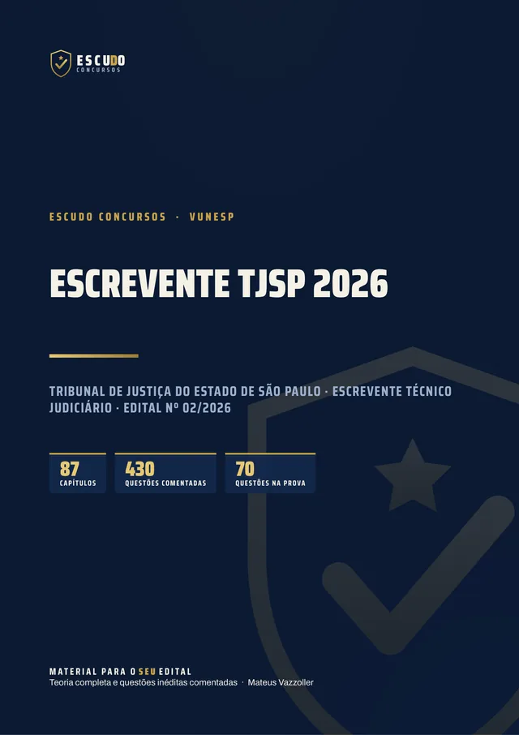
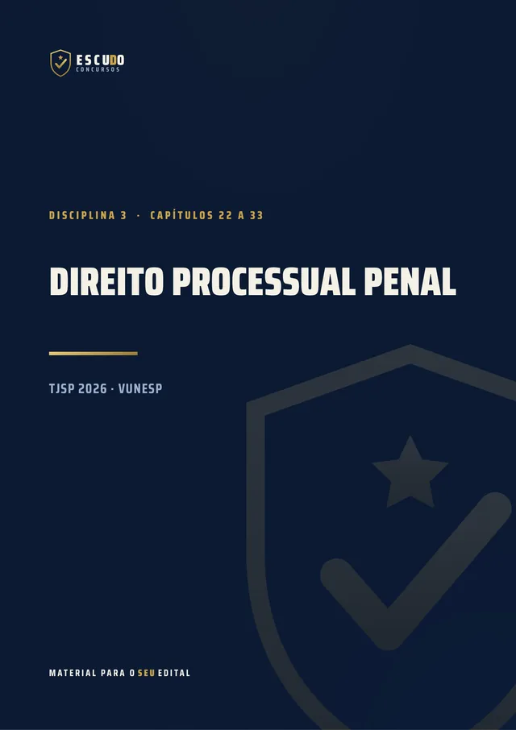
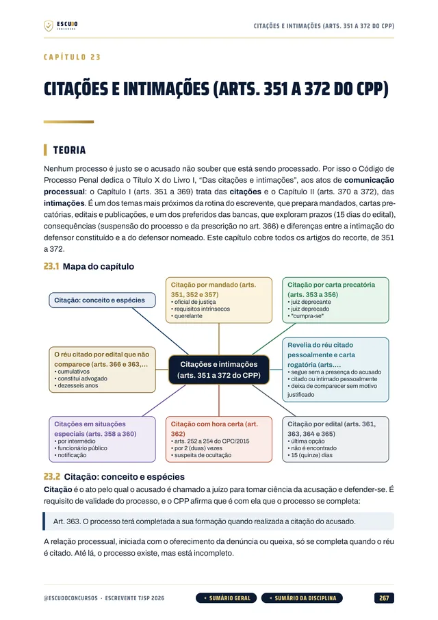
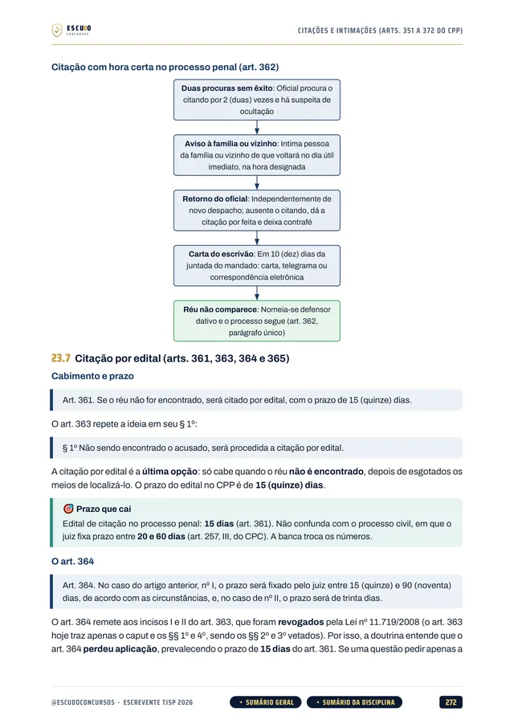
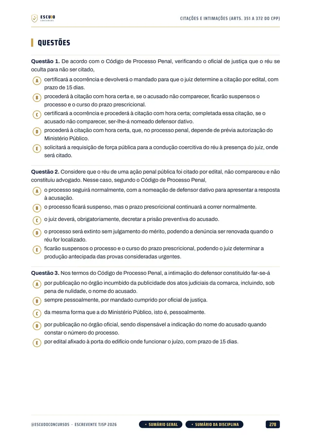
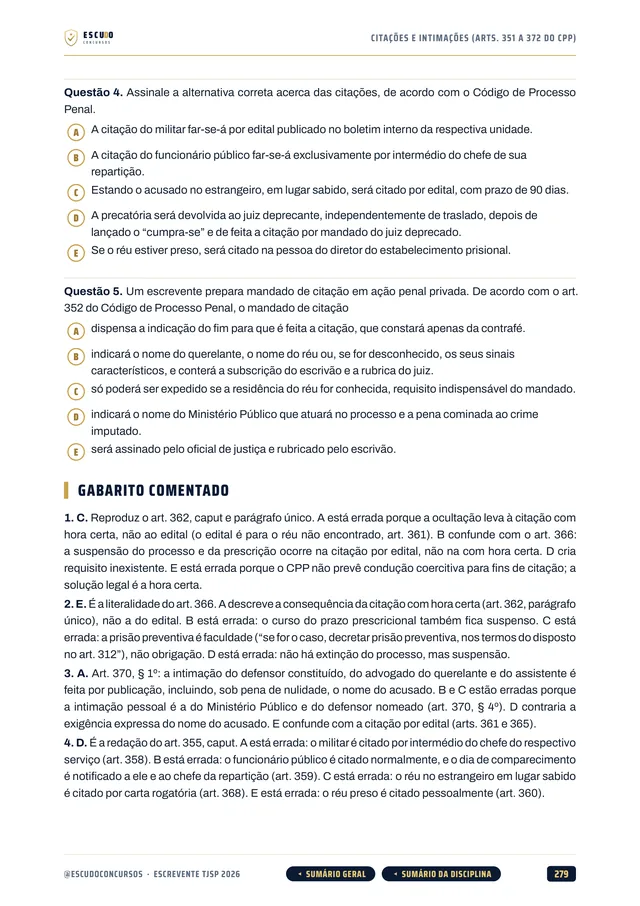

Simulado 1
No meio do caminho
Para medir onde você está nos dois blocos que eliminam e ajustar o estudo enquanto ainda dá tempo.
30 dias após a compra


430questões
comentadas
TJSP 2026 · Apostila em PDF
Escrevente do TJSP paga R$ 6.782,54 com ensino médio. Mas quem não acertar metade de Português e metade de Direito está fora, não importa a nota total. O seu material foi feito para esse corte? Curso feito a partir do Edital nº 02/2026, item por item, com questões de A a E no padrão da Vunesp e gabarito comentado.
de R$ 47 por
R$37
com o cupom TJSP37 até 10/12/2026. Pelo botão, o cupom já vai preenchido.
R$47
Curso completo, com acesso imediato.
O concurso
O Edital nº 02/2026 do Tribunal de Justiça do Estado de São Paulo forma cadastro de reserva para Escrevente Técnico Judiciário nas circunscrições judiciárias da 2ª à 10ª Região Administrativa Judiciária (a Capital fica de fora), com remuneração de R$ 6.782,54 e jornada de 40 horas semanais. O cargo exige ensino médio completo. As inscrições vão de 28 de outubro a 10 de dezembro de 2026, com taxa de R$ 81,00.
A prova da Vunesp é em 14 de março de 2027, à tarde, com 5 horas para a objetiva e a redação: 70 questões de 5 alternativas, de (A) a (E), todas com o mesmo peso, e uma redação dissertativo-argumentativa que vale de 0 a 40 e aprova com 24.
Para seguir no concurso é preciso acertar pelo menos 8 das 16 questões de Português e 15 das 30 de Direito, e ter nota final de pelo menos 5 (35 acertos de 70). Quem gabarita Conhecimentos Gerais e fica com 7 em Português está eliminado.
| Bloco | Disciplinas | Questões |
|---|---|---|
| I | Língua Portuguesa (mínimo de 50%) | 16 |
| II | Conhecimentos em Direito: Penal, Processual Penal, Processual Civil, Constitucional, Administrativo e Legislação Interna do TJSP (mínimo de 50%) | 30 |
| III | Conhecimentos Gerais: Atualidades (4), Matemática (4), Informática (9) e Raciocínio Lógico (7), só classificatório | 24 |
| Todas as questões com o mesmo peso, nota de 0 a 10; aprovação com nota final 5. Redação: 0 a 40, aprovação com 24. | 70 |
O formato
Você estuda lendo, no seu ritmo, pela área de membros da Hotmart ou com os arquivos baixados. O curso foi feito a partir do Edital nº 02/2026, item por item, na ordem do conteúdo programático do Escrevente, com a legislação considerada até a data do edital (14/10/2026).
Páginas reais do PDF
Toque numa página para ver em tamanho maior.





O que você recebe
Curso em PDF organizado em módulos pelas disciplinas do edital, com 1.328 páginas no padrão visual ESCUDO, para ler no computador, no tablet, no celular ou no app da Hotmart. Não há videoaulas.
87 capítulos cobrindo as onze disciplinas da prova objetiva: Língua Portuguesa (12 capítulos), Direito Penal (8), Direito Processual Penal (12), Direito Processual Civil (10), Direito Constitucional (8), Direito Administrativo (4), Legislação Interna do TJSP (7), Atualidades (2), Matemática (10), Informática (8) e Raciocínio Lógico (5), mais um capítulo de abertura sobre a prova, o corte por bloco e o plano de estudo.
430 questões inéditas com 5 alternativas, de (A) a (E), no padrão da Vunesp, todas com gabarito comentado: por que a correta está correta e onde está o erro de cada uma das outras.
Conhecimentos em Direito em 49 capítulos, no recorte exato de artigos do edital: crimes contra a fé pública e contra a Administração no Código Penal; sujeitos do processo, citações e intimações, procedimentos, Tribunal do Júri, recursos e habeas corpus no CPP; atos processuais, comunicação dos atos, tutela provisória, procedimento comum, sentença e recursos no CPC; Juizados Especiais Cíveis, Criminais e da Fazenda Pública; direitos e garantias fundamentais, nacionalidade, Administração Pública e Poder Judiciário na Constituição; Estatuto dos Funcionários Públicos Civis de São Paulo e Lei de Improbidade.
Legislação Interna do TJSP em 7 capítulos: teletrabalho (Resolução nº 850/2021), governança e uso do eproc (Resolução nº 963/2025), Plano de Cargos e Carreiras (LC nº 1.111/2010), Regimento Interno e as Normas de Serviço da Corregedoria Geral da Justiça (Tomo I) em 3 capítulos, com os ofícios de justiça e o processo eletrônico.
Conhecimentos Gerais em 25 capítulos: Atualidades de 2026 e o Estatuto da Pessoa com Deficiência, Matemática do programa, Informática com Windows 10 e 11, Word, Excel, Teams, OneDrive, SharePoint e OneNote do Microsoft 365, e Raciocínio Lógico.
Exemplos práticos na rotina do cartório judicial ao longo da teoria.
Teoria com recursos para memorizar: mapa de cada capítulo, lei transcrita onde o número ou a palavra decide a questão, fluxogramas, quadros de "pegadinha" e "não confunda", resumo esquematizado e pontos-chave de revisão no fim de cada capítulo.
Navegação clicável: do sumário você vai direto ao capítulo, e volta pelo botão do rodapé.
2 simulados inéditos no formato exato da prova (70 questões de A a E, na ordem e na divisão dos três blocos, e uma proposta de redação), cada um com caderno de comentários e padrão de expectativa da redação. O Simulado 2 é liberado na semana anterior à prova, para o seu último teste.
Área de membros
| Módulo | Conteúdo | Liberação |
|---|---|---|
| M0 Comece aqui | Apresentação + capítulo 001 (como é a prova e como usar o curso). Bônus: PDF completo para baixar e imprimir | Na compra; o PDF completo no 8º dia |
| M1 Língua Portuguesa | Capítulos 002 a 013 | Na compra |
| M2 Direito Penal | Capítulos 014 a 021 | Na compra |
| M3 Direito Processual Penal | Capítulos 022 a 033 | Na compra |
| M4 Direito Processual Civil | Capítulos 034 a 043 | Na compra |
| M5 Direito Constitucional | Capítulos 044 a 051 | Na compra |
| M6 Direito Administrativo | Capítulos 052 a 055 | Na compra |
| M7 Legislação Interna do TJSP | Capítulos 056 a 062 | Na compra |
| M8 Atualidades | Capítulos 063 e 064 | Na compra |
| M9 Matemática | Capítulos 065 a 074 | Na compra |
| M10 Informática | Capítulos 075 a 082 | Na compra |
| M11 Raciocínio Lógico | Capítulos 083 a 087 | Na compra |
| M12 Simulado 1 | 70 questões + redação, caderno de comentários | 30 dias após a compra |
| M13 Simulado 2 | 70 questões + redação, caderno de comentários | 07/03/2027 (7 dias antes da prova) |
Treino no formato da prova
Cada simulado tem 70 questões de A a E e uma proposta de redação, no formato exato da prova, com caderno de comentários e padrão de expectativa da redação.
Simulado 1
Para medir onde você está nos dois blocos que eliminam e ajustar o estudo enquanto ainda dá tempo.
30 dias após a compra
Simulado 2
Liberado na semana anterior à prova de 14/03/2027.
07/03/2027
Para quem é
Para quem vai prestar Escrevente Técnico Judiciário do TJSP em 14/03/2027, numa das circunscrições da 2ª à 10ª RAJ, e quer estudar pelo programa do edital, com Português e Direito, os dois blocos que eliminam, cobertos por inteiro.
Você tem 7 dias de garantia pela Hotmart. Se não for o que você esperava, pede o reembolso pela própria Hotmart, dentro do prazo.
Dúvidas
Não. É um curso 100% em PDF: teoria, questões comentadas e simulados para ler e resolver.
O acesso é imediato depois da confirmação do pagamento, pela área de membros da Hotmart (web ou app). O PDF completo para baixar e imprimir é liberado no 8º dia.
O Simulado 1 é liberado 30 dias após a compra. O Simulado 2 é liberado em 07/03/2027, uma semana antes da prova.
Os capítulos cobrem a prova objetiva. A redação aparece nos simulados: cada um traz uma proposta dissertativo-argumentativa no modelo do edital, com coletânea de textos, e o padrão de expectativa nos comentários. Os capítulos de Língua Portuguesa (coesão, concordância, regência, crase e pontuação) servem também para a redação.
A objetiva vale de 0 a 10. É preciso acertar pelo menos 8 das 16 questões de Português e 15 das 30 de Direito, e ter nota final de pelo menos 5 (35 acertos no total). O Bloco III não elimina sozinho, mas conta para a nota e para a classificação. O capítulo 001 explica a estratégia.
Não. Este edital é para as circunscrições da 2ª à 10ª RAJ; a Capital não entra. O Oficial de Justiça tem edital e programa próprios.
Não. As 430 questões de treino e as dos simulados são inéditas, escritas no padrão da Vunesp a partir do conteúdo programático do edital.
Você tem 7 dias de garantia pela Hotmart. Se não for o que você esperava, pede o reembolso.
TJSP 2026 · Escrevente Técnico Judiciário
de R$ 47 por
R$37
com o cupom TJSP37 até 10/12/2026.
R$47
Curso completo, com acesso imediato.
Material para o SEU edital. ESCUDO Concursos.